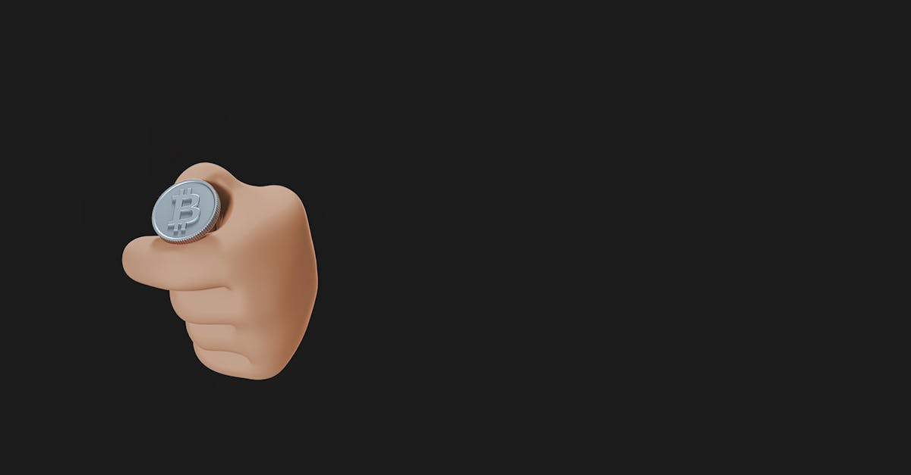

XRP en Tête : Une Performance Étonnante sous le Radar du Volume
Dans le paysage en constante évolution des crypto-monnaies, où Bitcoin et Ethereum dominent souvent les discussions et les mouvements de marché, une performance récente a captivé l'attention des observateurs avertis. Le token XRP, associé à Ripple, a discrètement surclassé ses pairs majeurs, affichant des gains hebdomadaires significatifs qui ont laissé de nombreux analystes perplexes. Alors que le marché global navigue à travers des eaux incertaines, cette remontée de XRP pourrait sembler être un signe de résilience ou même d'un regain d'intérêt. Cependant, une analyse plus approfondie révèle une nuance cruciale : cette performance s'est déroulée sur des volumes d'échange étonnamment faibles. Ce phénomène soulève une question fondamentale pour tout trader : s'agit-il d'un véritable signal de force, précurseur d'une tendance haussière durable, ou d'un simple mouvement technique dénué de la conviction nécessaire pour un breakout majeur ?
👉 À lire : Crypto : L'hiver se prolonge, le volume des CEX chute de 39%
Le volume de trading est un indicateur essentiel de la participation au marché et de la conviction derrière un mouvement de prix. Un prix qui augmente avec un volume élevé indique généralement une forte demande et un intérêt généralisé, validant ainsi la tendance. À l'inverse, une hausse des prix accompagnée d'un volume faible suggère souvent un manque de conviction, une liquidité limitée ou des mouvements spéculatifs qui peuvent être facilement inversés. C'est précisément le scénario auquel nous assistons avec XRP. Cette situation complexe met en lumière les défis inhérents au trading de crypto-monnaies, où la lecture superficielle des graphiques peut être trompeuse. Pour les traders humains, interpréter de tels signaux ambigus est une tâche ardue, souvent influencée par des biais émotionnels. C'est là que la pertinence d'outils d'analyse avancés, comme ceux basés sur l'intelligence artificielle, devient évidente. Ils peuvent déchiffrer ces dynamiques subtiles pour offrir une perspective plus objective et data-driven, essentielle pour naviguer dans ces marchés nuancés et identifier les véritables opportunités au-delà du simple mouvement de prix.
👉 À lire : Bitcoin: L'indicateur qui prédit les creux depuis 2015
Le Paradoxe de XRP : Des Gains Solides Malgré des Volumes Anémiques
Au cours de la semaine écoulée, XRP a affiché une performance remarquable, se détachant clairement de la trajectoire plus modérée de Bitcoin et d'Ethereum. Alors que la plus grande crypto-monnaie par capitalisation boursière, Bitcoin, et son principal concurrent, Ethereum, ont connu des fluctuations relativement stables ou de légers gains, XRP a enregistré une augmentation notable de sa valeur. Ce mouvement haussier a ravivé l'espoir chez certains investisseurs, d'autant plus que le token a été au centre de l'attention en raison des développements juridiques autour de Ripple, sa société mère, face à la SEC américaine. Chaque avancée positive dans ce dossier a souvent été perçue comme un catalyseur potentiel pour le prix de XRP, et cette récente poussée n'a pas fait exception à la règle, alimentant les spéculations sur un rebond significatif.
Cependant, le tableau est loin d'être univoque. Les données de marché révèlent que cette ascension s'est produite avec des volumes de trading considérablement inférieurs à ceux que l'on observerait lors d'un véritable rallye de conviction. Par exemple, les volumes quotidiens de XRP sont restés bien en deçà de leurs moyennes historiques, et surtout, nettement inférieurs à ceux de Bitcoin et Ethereum, même en proportion de leur capitalisation boursière. Cette divergence entre la performance du prix et la participation au marché est un signal d'alerte. Un volume faible signifie que moins de capitaux ont été nécessaires pour faire monter le prix, ce qui peut indiquer une faible liquidité ou une manipulation plus facile par un petit nombre d'acteurs. Cela suggère que la hausse pourrait être le résultat d'achats opportunistes ou de liquidations de positions courtes, plutôt qu'une vague d'intérêt généralisé de la part des grands investisseurs institutionnels ou d'une large base de détail. L'absence de participation massive dénote une prudence généralisée, un attentisme qui tempère l'enthousiasme pour un breakout confirmé. Pour tout trader, ignorer cet indicateur crucial serait une erreur stratégique, car il pourrait annoncer une volatilité accrue et un risque de correction rapide si la conviction du marché ne se matérialise pas.
L'Énigme du Volume : Consolidation ou Fausse Piste pour les Traders ?
La question centrale que pose la performance de XRP avec un volume faible est de savoir si nous sommes face à une phase de consolidation saine ou à une « fausse piste » qui pourrait induire les traders en erreur. En analyse technique, un mouvement de prix haussier accompagné d'un faible volume est souvent interprété comme un signe de faiblesse sous-jacente. Il manque la confirmation que de nombreux acheteurs sont prêts à soutenir le prix à des niveaux plus élevés. Dans ce contexte, plusieurs interprétations sont possibles :
- Consolidation avant un Mouvement Majeur ? Certains pourraient argumenter que le marché est en phase de consolidation, digérant les nouvelles et attendant des catalyseurs plus forts. Le faible volume pourrait alors indiquer que les vendeurs sont absents, mais que les acheteurs n'ont pas encore manifesté une conviction suffisante pour un mouvement explosif. C'est une période d'équilibre délicat où le marché se prépare.
- Manque de Conviction Institutionnelle : Les grands acteurs institutionnels, qui ont le pouvoir de déplacer le marché, ont tendance à entrer avec des volumes importants. L'absence de ces volumes suggère qu'ils restent en marge, attendant des signaux plus clairs ou des niveaux de prix plus attractifs. Leur absence est un facteur limitant pour tout breakout durable.
- Piège à Haussiers (Bull Trap) : Un scénario plus pessimiste est celui du « bull trap », où une hausse des prix avec un faible volume attire les acheteurs optimistes, avant qu'une inversion brutale ne se produise, piégeant ceux qui sont entrés tardivement. Ce type de mouvement est particulièrement insidieux car il joue sur l'émotion de la peur de manquer (FOMO).
Pour les traders, la distinction entre ces scénarios est vitale. Un volume anémique signifie que même une petite pression de vente pourrait faire chuter le prix rapidement, rendant les positions vulnérables. La prudence est donc de mise, et une analyse multicritères est indispensable pour éviter les pièges. L'interprétation de ces signaux complexes et souvent contradictoires requiert une expertise que peu de traders humains peuvent maintenir 24 heures sur 24, sans être affectés par la fatigue ou l'émotion. C'est précisément dans ces situations ambiguës que les capacités d'analyse objective et continue des systèmes d'intelligence artificielle peuvent offrir un avantage décisif, en filtrant le bruit pour identifier les signaux les plus fiables.
Facteurs Sous-Jacents et Contexte Macro : Une Volatilité Accrue
Au-delà des mouvements spécifiques de XRP, il est impératif d'ancrer cette analyse dans le contexte plus large du marché des crypto-monnaies et de l'économie mondiale. Le marché crypto dans son ensemble a traversé une période de turbulences, marquée par des inquiétudes persistantes concernant l'inflation, la politique monétaire des banques centrales et un environnement réglementaire de plus en plus strict. Ces facteurs macroéconomiques ont un impact direct sur l'appétit pour le risque des investisseurs, et par extension, sur la liquidité et le volume de trading des actifs numériques. Lorsque l'incertitude règne, les capitaux ont tendance à se retirer des actifs les plus risqués, ou du moins à se montrer plus sélectifs, ce qui se traduit souvent par une diminution des volumes globaux.
Pour XRP spécifiquement, le contexte réglementaire reste une épée de Damoclès. Bien que Ripple ait obtenu des victoires partielles face à la SEC, l'issue finale de la bataille juridique reste incertaine. Cette incertitude crée une réticence chez de nombreux investisseurs, en particulier les institutionnels, à s'engager pleinement, ce qui contribue à maintenir les volumes à des niveaux bas. De plus, la nature même de XRP, souvent critiquée pour sa centralisation relative par rapport à d'autres cryptos, peut également influencer la perception du risque et la participation des acteurs du marché. Les rumeurs de partenariats ou de développements technologiques peuvent certes générer des pics d'intérêt ponctuels, mais sans une base solide de conviction et de liquidité, ces mouvements restent fragiles.
« La confluence de facteurs macroéconomiques, de l'incertitude réglementaire et des spécificités de chaque actif crée un environnement de trading d'une complexité sans précédent. Interpréter ces multiples couches de données est au-delà des capacités humaines optimales et constantes. »
Dans un tel environnement, la volatilité peut être amplifiée par de faibles volumes. De petits ordres peuvent avoir un impact disproportionné sur le prix, créant des mouvements erratiques qui sont difficiles à anticiper et à exploiter pour les traders traditionnels. La compréhension de ces forces sous-jacentes est cruciale pour ne pas se laisser emporter par des mouvements de prix qui ne reflètent pas une réelle force du marché. C'est précisément cette capacité à analyser des données hétérogènes et à en extraire des corrélations pertinentes que les systèmes d'intelligence artificielle peuvent maîtriser avec une efficacité inégalée, offrant une vision plus holistique et prédictive des dynamiques du marché.
Stratégies de Trading Face à l'Incidence du Volume : L'Approche de l'IA
Face à une situation où un actif comme XRP affiche des gains avec un volume anémique, les traders se trouvent à un carrefour stratégique. Les approches traditionnelles exigent une prudence accrue et une réévaluation constante des positions. Les stratégies courantes incluent :
- Analyse Technique Approfondie : Regarder au-delà du prix, en se concentrant sur les indicateurs de volume, les carnets d'ordres, et les niveaux de support/résistance clés pour identifier les zones de liquidité et les points d'inversion potentiels.
- Gestion du Risque Rigoureuse : Réduire la taille des positions, placer des stop-loss serrés, et ne pas se laisser emporter par le FOMO (Fear Of Missing Out) qui pousse à entrer sur des mouvements non confirmés.
- Attentisme et Confirmation : Attendre des confirmations de volume ou de rupture de niveaux clés avant de prendre des positions significatives, même si cela signifie manquer une partie du mouvement initial.
- Trading de Range : Dans un marché à faible volume et sans direction claire, le trading de range (acheter au support, vendre à la résistance) peut être plus pertinent que les stratégies de suivi de tendance.
Cependant, l'application de ces stratégies par un humain est souvent entravée par des biais cognitifs et des limitations opérationnelles. La fatigue, le stress, l'émotion (peur, avidité) et la simple incapacité à surveiller le marché 24h/24 et 7j/7 peuvent conduire à des erreurs coûteuses. Un trader humain peut manquer un signal crucial pendant son sommeil ou prendre une décision hâtive basée sur une intuition plutôt que sur une analyse objective des données complexes. De plus, la quantité de données à analyser – prix, volume, profondeur du carnet d'ordres, actualités, sentiment social, données on-chain – est colossale et dépasse la capacité de traitement en temps réel d'un individu.
C'est précisément là que l'intelligence artificielle apporte un avantage transformateur. Un Agent IA de trading, tel que celui proposé par CryptoMind AI, n'est pas sujet à ces limitations. Il peut :
« Analyser et corréler des milliers de points de données simultanément, 24 heures sur 24, 7 jours sur 7, sans émotion ni fatigue. Il identifie les nuances de volume, la profondeur du marché, et les signaux faibles qui échapperaient à l'œil humain, permettant une prise de décision basée uniquement sur les probabilités et la logique algorithmique. »
En intégrant des modèles prédictifs sophistiqués, l'IA peut évaluer la probabilité qu'un faible volume soit un précurseur d'un vrai breakout ou un signal de consolidation, ajustant ainsi ses stratégies en conséquence et en temps réel, offrant une réactivité et une précision inégalées dans des marchés aussi nuancés.

L'Avantage Décisif de l'Intelligence Artificielle dans la Détection des Vrais Signaux
Dans le monde volatil et imprévisible des crypto-monnaies, la capacité à distinguer un signal de trading authentique du simple bruit de marché est la pierre angulaire du succès. L'épisode récent de XRP, avec sa performance intrigante sur des volumes faibles, illustre parfaitement la complexité de cette tâche. C'est précisément dans ces scénarios nuancés que l'intelligence artificielle déploie tout son potentiel, offrant une supériorité d'analyse et d'exécution que les méthodes humaines peinent à égaler. Un Agent IA de trading, comme celui développé par CryptoMind AI, est conçu pour exceller là où les traders traditionnels atteignent leurs limites.
Comment un tel agent opère-t-il ? Il ne se contente pas de regarder le prix. Il analyse en profondeur un spectre incroyablement large de données en temps réel :
- Analyse de Volume Multidimensionnelle : Au-delà du volume brut, l'IA examine la distribution du volume sur différentes bourses, la relation entre le volume et la volatilité, et la persistance du volume sur différentes périodes pour évaluer la conviction sous-jacente.
- Lecture du Carnet d'Ordres et de la Profondeur du Marché : L'IA scrute les carnets d'ordres en direct pour identifier les niveaux de liquidité, les blocs d'ordres importants et les déséquilibres entre l'offre et la demande qui peuvent indiquer des mouvements futurs.
- Analyse du Sentiment : En intégrant des algorithmes de traitement du langage naturel (NLP), l'Agent IA peut analyser les médias sociaux, les forums et les actualités pour jauger le sentiment général du marché envers un actif, un facteur souvent précurseur des mouvements de prix.
- Données On-Chain : Il évalue les mouvements de tokens sur la blockchain, les adresses actives, les transferts importants, et les activités des baleines, offrant une vision unique de l'activité réelle des participants.
- Identification de Patterns Complexes : L'IA est capable de détecter des patterns de trading subtils et des corrélations non évidentes entre différents actifs ou indicateurs, qui échappent à l'analyse humaine.
L'avantage fondamental réside dans la capacité de l'IA à traiter ces informations de manière objective, sans émotion et à une vitesse inégalée. Elle peut ajuster ses stratégies en microsecondes, capitalisant sur des opportunités fugaces qui seraient invisibles pour un humain. De plus, son fonctionnement 24h/24 et 7j/7 assure une surveillance constante du marché, permettant de réagir instantanément aux changements de conditions, même en dehors des heures de trading habituelles. Pour les investisseurs cherchant à optimiser leurs performances dans un marché crypto de plus en plus sophistiqué, l'intégration d'un Agent IA n'est pas seulement un avantage, c'est une nécessité pour naviguer avec succès et transformer les incertitudes du volume faible en opportunités profitables.
Au-Delà des Graphiques : Pourquoi l'IA est Essentielle pour le Trading 24/7
Le marché des crypto-monnaies ne dort jamais. Il est mondial, décentralisé et fonctionne 24 heures sur 24, 7 jours sur 7. Cette caractéristique fondamentale, bien qu'offrant des opportunités continues, présente également un défi colossal pour les traders humains. La fatigue, la nécessité de maintenir un équilibre vie professionnelle/personnelle, et l'impossibilité physique de surveiller constamment tous les indicateurs du marché signifient que des opportunités peuvent être manquées et des risques non gérés, en particulier lors des mouvements soudains et inattendus qui sont monnaie courante dans l'espace crypto. C'est là que la capacité de l'intelligence artificielle à opérer sans relâche devient un atout stratégique inestimable, transformant la donne pour les investisseurs.
Un Agent IA de trading, comme celui que CryptoMind AI met à la disposition de ses utilisateurs, est conçu pour être votre œil et votre bras robotique sur le marché, sans interruption. Il ne souffre pas du décalage horaire, n'a pas besoin de sommeil et ne connaît pas la fatigue. Cette disponibilité constante permet à l'IA de :
- Capitaliser sur les Mouvements Nocturnes ou Inopinés : De nombreux mouvements significatifs du marché crypto se produisent en dehors des heures de bureau traditionnelles. Un Agent IA est toujours actif, prêt à exécuter des transactions basées sur ses modèles prédictifs et ses stratégies définies, qu'il soit 3h du matin ou un jour férié.
- Réagir Instantanément aux Nouvelles : En combinant l'analyse de marché avec des flux d'actualités en temps réel et l'analyse de sentiment, l'IA peut identifier et réagir aux événements majeurs (réglementations, partenariats, hacks) bien avant qu'un humain ne puisse en prendre connaissance et en évaluer l'impact.
- Optimiser la Liquidité : Dans les marchés à faible volume, comme celui observé récemment avec XRP, la liquidité peut être éphémère. L'IA peut identifier les fenêtres de liquidité optimales pour entrer ou sortir des positions, minimisant ainsi le slippage et maximisant la rentabilité.
- Gérer le Risque de Manière Proactive : L'Agent IA peut ajuster les stop-loss, prendre des profits partiels ou même inverser des positions en temps réel, en fonction des changements de conditions de marché, assurant une gestion du risque dynamique et continue qui protège le capital de l'investisseur 24h/24.
L'intégration de l'IA dans le trading de crypto-monnaies n'est plus un luxe, mais une évolution nécessaire pour quiconque souhaite rester compétitif et prospérer dans cet environnement en constante effervescence. Elle offre une tranquillité d'esprit, sachant que vos investissements sont gérés avec une intelligence et une diligence constantes, bien au-delà des capacités humaines, et ce, à chaque instant du jour et de la nuit. C'est la promesse d'un trading plus intelligent, plus sûr et plus performant.
Conclusion : Naviguer l'Incertitude avec l'Intelligence Artificielle
L'épisode récent de XRP, dominant Bitcoin et Ethereum en termes de gains hebdomadaires tout en affichant des volumes d'échange étonnamment faibles, est une illustration parfaite de la complexité et des nuances inhérentes au marché des crypto-monnaies. Ce scénario nous rappelle que la lecture superficielle des mouvements de prix ne suffit pas. Un véritable succès dans le trading d'actifs numériques exige une compréhension approfondie des dynamiques sous-jacentes, notamment le rôle crucial du volume en tant qu'indicateur de la conviction du marché. L'absence de volumes significatifs derrière une hausse de prix peut signaler une consolidation, une faible liquidité ou même un piège pour les traders moins avertis, rendant la prise de décision particulièrement délicate et risquée pour l'investateur humain.
Dans un tel environnement, où chaque signal doit être analysé sous plusieurs angles et où les informations affluent sans cesse, les limites de l'analyse humaine deviennent évidentes. Les biais émotionnels, la fatigue et l'impossibilité de surveiller le marché 24 heures sur 24, 7 jours sur 7, sont autant d'obstacles à une performance optimale et constante. C'est précisément là que l'intelligence artificielle se révèle être un allié indispensable. Un Agent IA de trading, comme celui proposé par CryptoMind AI, transcende ces limitations en offrant une capacité d'analyse objective, multidimensionnelle et continue.
« L'IA peut déchiffrer les patterns complexes entre le prix, le volume, le sentiment et les données on-chain, identifiant les véritables opportunités et gérant les risques avec une précision et une réactivité inégalées. Elle agit comme un filtre puissant, séparant le bruit des signaux pertinents, et permettant aux traders de prendre des décisions éclairées, basées sur des données plutôt que sur l'émotion. »
L'avenir du trading de crypto-monnaies repose sur l'exploitation de technologies avancées. Pour naviguer avec succès dans les eaux parfois troubles du marché, où des phénomènes comme la performance de XRP sur faible volume sont de plus en plus fréquents, s'équiper d'outils intelligents n'est plus une option, mais une nécessité. L'intelligence artificielle offre la promesse d'un trading optimisé, plus sûr et plus rentable, permettant aux investisseurs de capitaliser sur chaque opportunité, à tout moment, avec une confiance renouvelée.